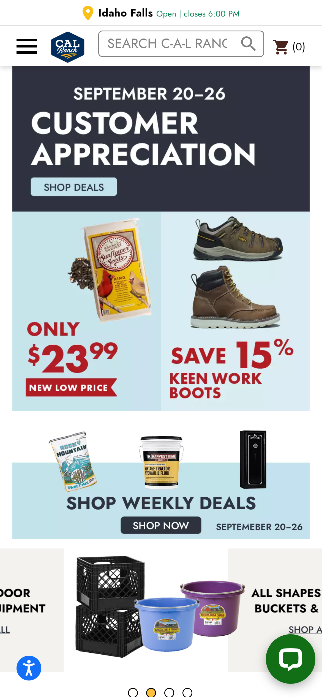
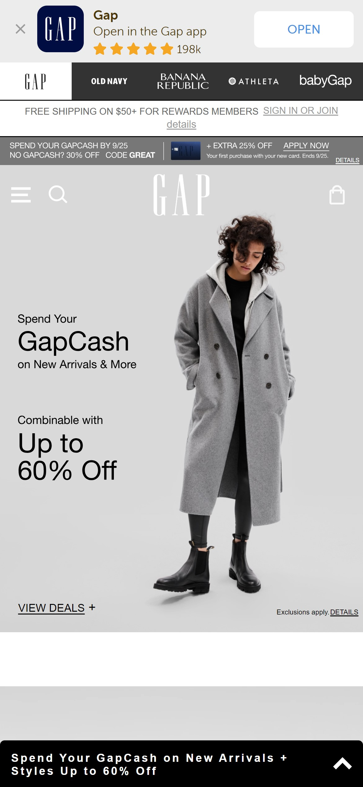

Visual Hierarchy
Cal Ranch
Visit Cal Ranch
Visual hierarchy is the principle of arranging elements to show their order of importance. You can see in this screenshot taken from the Cal Ranch home page that the top of the page has larger text and more bold colors than the bottom of the page, which draws attention to the upper half before leading users' eyes downward.
Rule of Thirds
Gap
Visit Gap
The rule of thirds is a technique commonly used in art and photography to make images look more attractive and directs the viewer's gaze to the main focalo point of the image. In this image that Gap features at the top of their home page, they utilize the rule of thirds using this model as to draw eyes to the outfit they're advertising, as well as their recent sale, which is placed in the first third of the image.
Contrast
Sunrun Inc.
.png)
Visit Sunrun
The definition of contrast in design is "the use of different elements or opposites to create an arresting effect." Contrast draws attention to important elements or key messages in an image. The concept of contrast is used very well on this Sunrun Inc. page through the use of the dark background with the light text. This creates an attractive website for users to look at.